De 8 stappen naar succes:
Stap 1: Maak de daisy.
Stap 2: Maak het witte kruis.
Stap 3: Maak de onderste laag.
Stap 4: Maak de tweede laag.
Stap 5: Maak het gele kruis.
Stap 6: Maak de gele zijde
Stap 7: Fix de hoeken.
Stap 8: Fix de randen.
In deze specifieke guide zal je worden uitgelegd hoe je een 3x3 Rubiks Cube kan oplossen met behulp van foto's.
Voor we beginnen
Voor we beginnen aan de stap voor stap oplossing zijn er wat dingen die je moet begrijpen over een Rubiks Cube.
- De Rubiks Cube heeft 6 vlakken.
- Elk vlak heeft een vast midden die NIET kan bewegen.
- Dit betekend dat de kant met een rood midden uiteindelijk ook rood zal zijn wanneer de cube opgelost is.
- Wit staat tegenovergesteld van geel, rood tegenover oranje en groen tegenover blauw
- Er zijn 3 verschillende stukken. Het midden was hier een van maar er zijn nog twee namelijk.
- De randen zijn de stukken waar maar 2 kleuren aan zitten.
- De stukken waar 3 kleuren aan zitten worden hoeken genoemd.
Stap 1: Maak de daisy
De eerste stap in het oplossen van de kubus is het maken van de Daisy.
Dit is hoe de Daisy er hoort uit te zien:

Deze eerste stap is zeer intuitief omdat je hiervoor geen algoritmes kunt gebruiken. Dit zal je dus zelf eerst een beetje moeten onder de knie moeten krijgen.
Het is de bedoeling dat het gele middenstuk omringt is door alle vier de rand stukken.
Tips:
de gele laag kan je vrij draaien zonder dat de kleuren verplaatst worden.
Eenmaal dat een wit rand stuk op zijn plaats hebt gezet hoef je die niet meer uit zijn positie te halen om andere witte rand stukken juist te positioneren.
Stap 2: Maak het witte kruis
De tweede stap is het witte kruis maken. Dit doe je door te kijken naar een van de vier rand stukken.
Zoals je weet heeft een rand stuk 2 kleuren, dus ga je kijken naar het tweede kleur op dat stuk en draai je de laag tot die kleur overeenkomt met de kleur van het middenstuk aan de zijkant.
 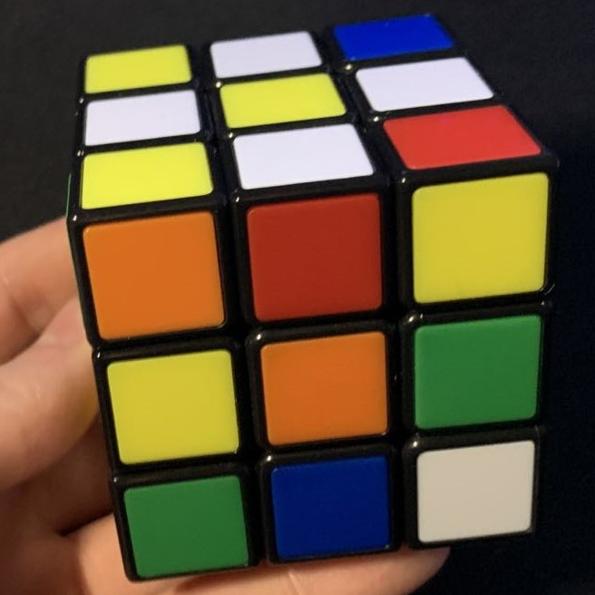
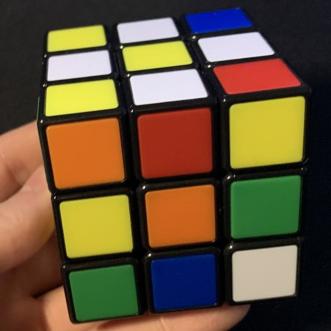
 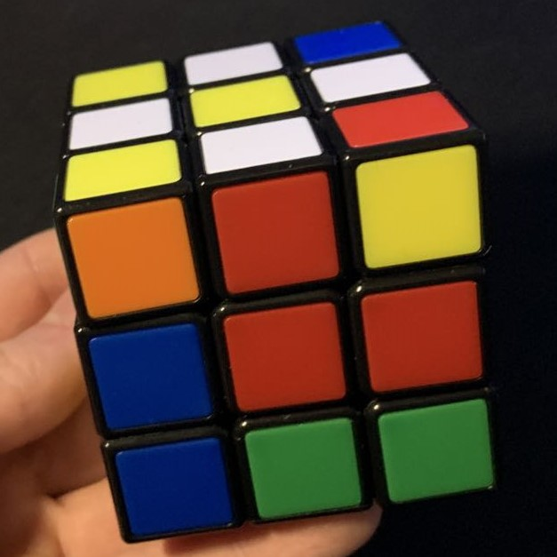
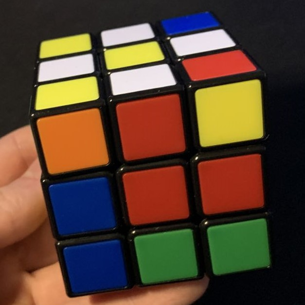
Wanneer je dit gelukt is draai je de rand 180 graden naar onder. Herhaal dit 4x, dit moet het eindresultaat zijn:
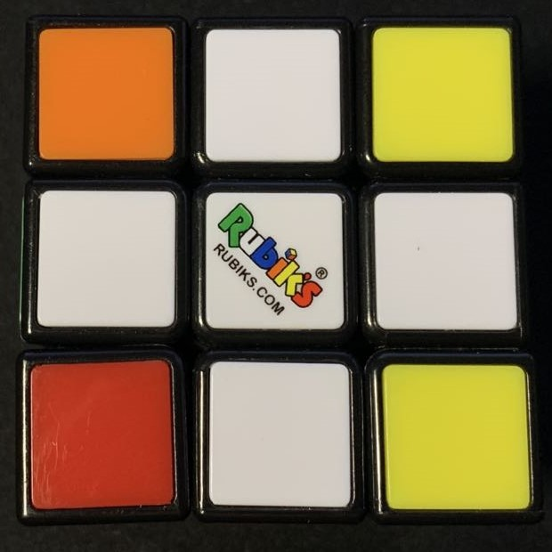
Stap 3: Maak de onderste laag
Tot nu toe heb je gewoon een simpele strategie toegepast om het witte kruis te maken.
Tijd om je eerste algoritme te leren!
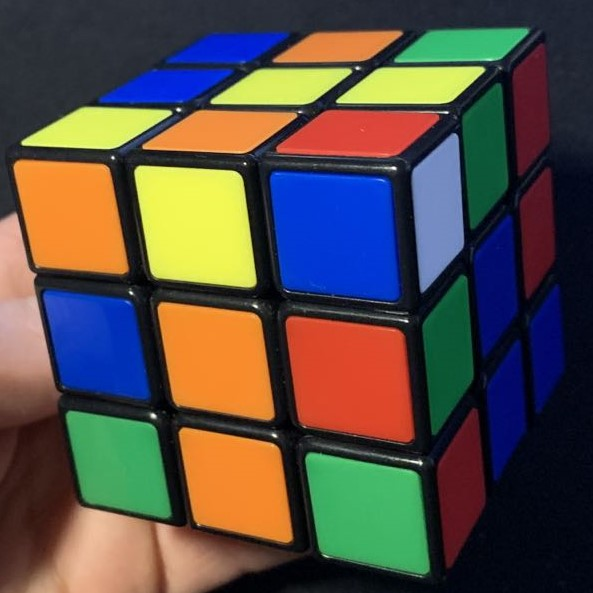
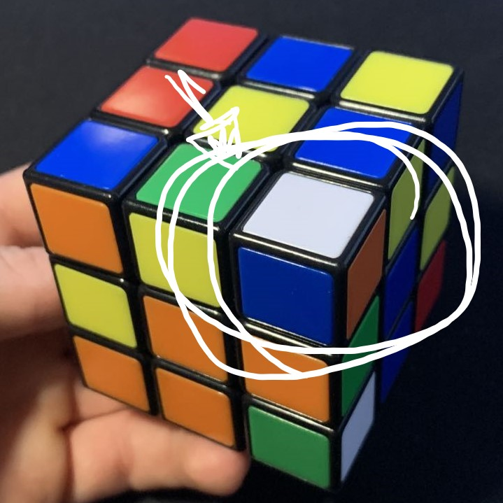
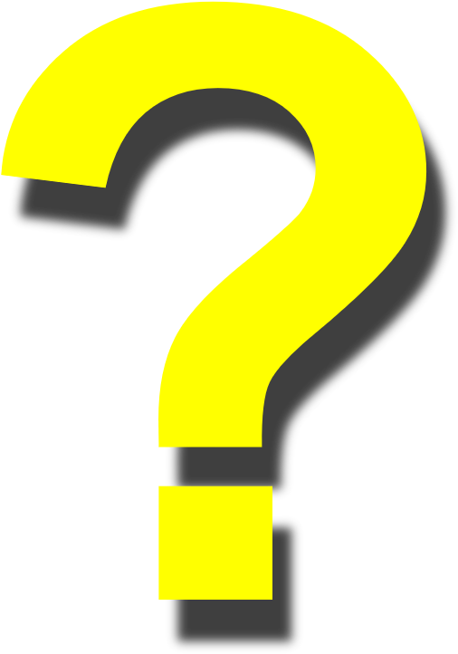

Zoek nu naar een witte sticker op de bovenste laag die naar de zijkant wijst.
Deze witte sticker zal op een van de hoeken staan, en je weet dat hoek stukken altijd 3 kleuren hebben.
Kijk nu naar de kleur links of rechts van de witte sticker.
Draai de bovenkant van de kubus zodat de sticker naast de witte sticker die ook naar buiten is gericht diagonaal overeenkomt met het midden van dezelfde kleur zoals je kan zien op bovenstaande foto.
Wanneer je het midden gematched hebt draai je de kubus met de diagonaal naar je toe.
Als de sticker in de bovenste laag zich rechts van het midden bevindt, voer dan de rechtse trigger uit.
Als de overeenkomende sticker links van het midden zit, voer dan de linker trigger uit.
Bij het voorbeeld zal dus de rechter trigger moeten uitvoeren.
Als de witte sticker van boven zit dan zorg je dat direct onder die sticker aan de witte kant GEEN andere witte sticker zit en voer je de gepaste trigger uit om hem op de juiste laag te plaatsen.
Wanneer de sticker aan de onderste laag zit aan de zijkant kan je de gepaste trigger uitvoeren om deze van boven te krijgen.
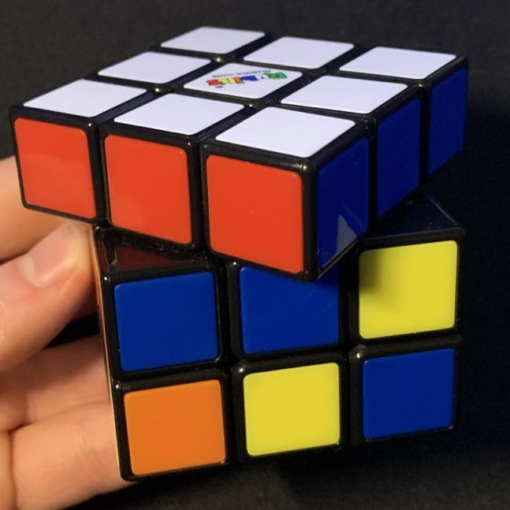
Stap 4: Maak de tweede laag
Om de middelste laag te maken ga je op zoek naar rand stukken op de bovenste laag waar GEEN geel in zit.
Eenmaal je een goed randstukje hebt gevonden draai je de bovenste laag zodat de sticker aan de zijkant overeenkomt met het kleur van een middenstuk.
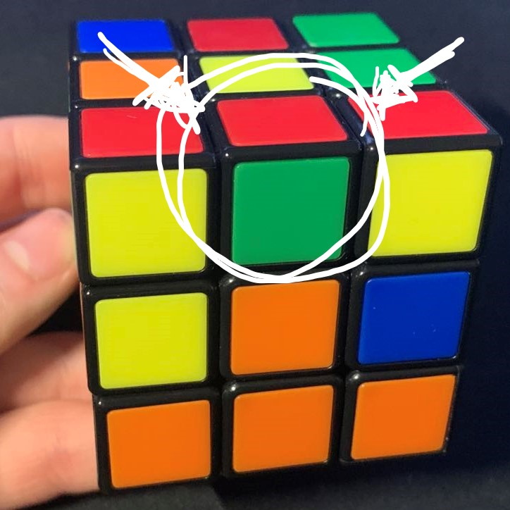
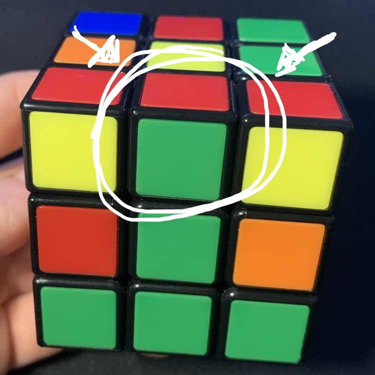
Kijk nu naar de naar boven gerichte sticker op dat randstuk. Die sticker komt overeen met het midden aan de linker of rechterkant.
Linkerkant
U' + Left Trigger
Rechterkant
U + Right Trigger
Soms vind je geen randstukjes in de bovenste laag zonder geel maar is de middelste laag nog niet opgelost.
In dat geval voer je de gepaste trigger toe op het misplaatste stuk vanboven te zetten zodat je deze kan oplossen met de normale methode van stap 4.
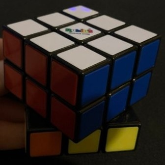